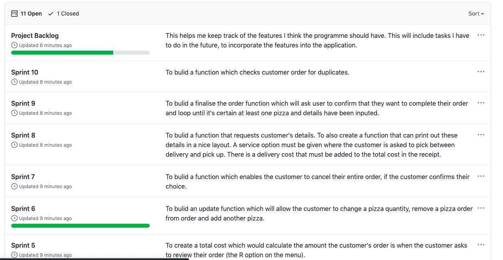
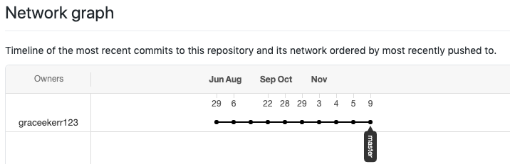
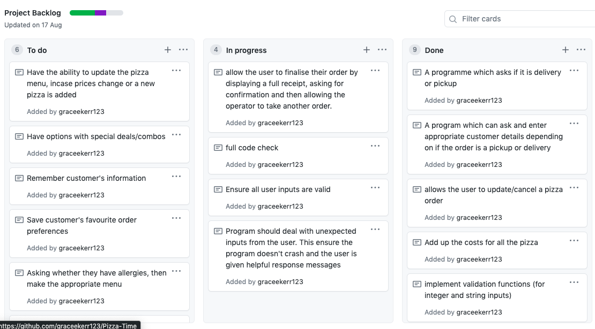
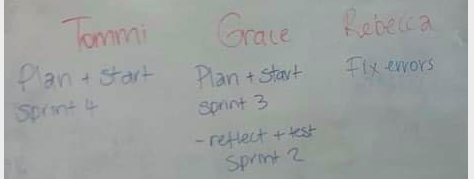
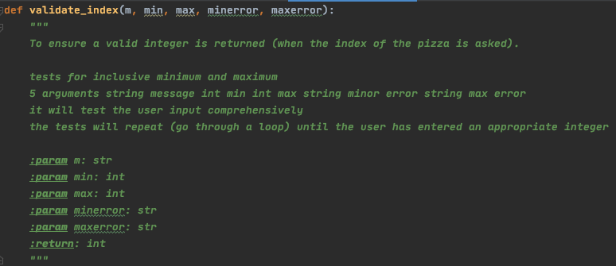
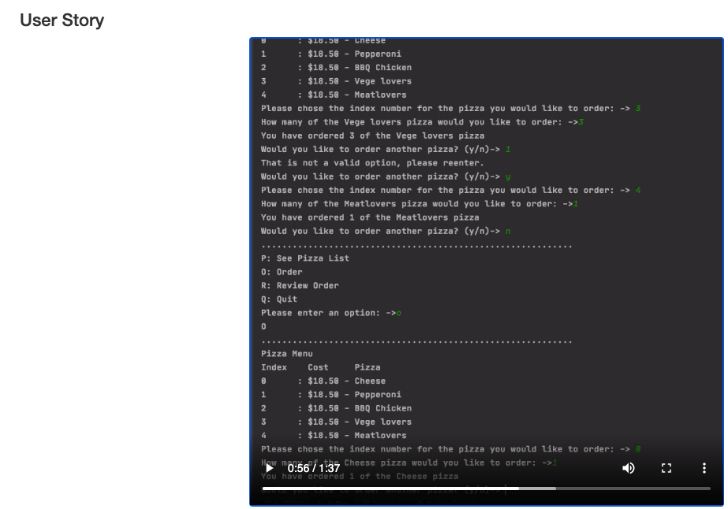
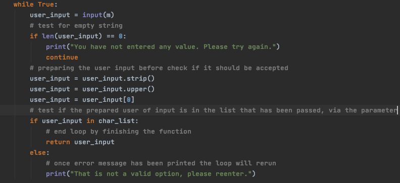
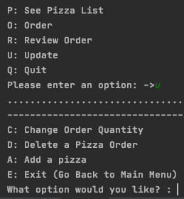

Brief:
To use programming techniques and processes to develop a computer program that allows an operator to order pizza when talking to a customer through the phone.
Some features that I expect my program to have is that allows the operator to enter customer details, pizza(s) ordered and pick-up/deliver requirements and then display delivery details, final order and total cost.
Things I had to consider:
- Using agile processes by developing the project using sprints
- Decomposing into smaller components by buliding the programme one function at a time (usually it was one function per sprint)
- Coming up for multiple approaches to a function or fixing a component, as shown in the iterative deicsions
- Testing regually, during and at the end of each sprint - so I can address problems as I discover them
- Managing a product backlog so I can protise which features are most important
- Using GitHub to reguarly commit my finished sprints on git hub
Using Github as a project management.
I used Github for a version control for my project so I could implement agile processes. In software development, agile practices revolve around adaptive planning, quick development and continual improvement. I bulit my project in the form of sprints where I did an iteration in a small timeframe for each sprint, making sure I continuously went through the development cycle (plan, develop, build and evaluate, until development is complete). I tested each sprint seperately before implementing it new functions/code into the main program, and when the main program was upto date I would test again. Agile processes encourage flexible responses to change. I was able to do this by changing my plan of what to focus on in the next sprint depending on what I uncovered during the testing stage. Each version of my code is stored on Github. My backlog Kanban sprint boards are also kept on Github, displaning my overall plan as well as my plan for each sprint. I commited each sprint to Github after I had completely finished each sprint. I can access each sprint as well as my main program at any point through Github and see it displayed in the 'Network' section (as shown below).
Shows my progress with all my kanabn sprint boards
Network section: shows the commit history
Backlog
I used a backlog to prioritise stages of work, this is an important part of an agile development. My backlog displays a prioritised list of features to implement into my project. It presents the important tasks that I have to do at the top of the list, which indicates to me which tasks I should be working on first. This made me able to manage my project more easily as it gave me an idea of what to work on every lesson. I was able to estimate what I would be working on and in which order, essiential a roadmap to the project. At the beginning of my project I had all my features I wanted to add in the To-Do column in a prioritised order. As I was working through each sprint I would move the card through the columns to completed. Sometimes during testing of the sprints I would find another feature I would have to add and add it to the To-Do column. For instance, when I was testing sprint 5 I realised I needed the feature to update the customer order, so I added "allows the user to update/cancel a pizza order" to the top to the To-Do section, so I would focus on it in the next sprint. Below is a screenshot of my backlog towards the end of the project.
Standups:
To make sure that our class was on track and had a plan for the lesson, during the project we often had a short meeting at the beginning of class. This meeting consisted of questions of 1. what we have already completed, 2. What we intend to work on today, and 3. what is blocking us for doing our task. This was incredibly helpful for me to manage my project as it allows me to divide tasks into short phases of work e.g. working on one part of the project in one lesson and other part in the next one. I can frequently reassess how I'm working and what is the most important at the present moment. It also allows me to adaptat plans easily, as if I'm consistently reassessing, I can quickly shift my attention to the prioritised task.

Relevant Implications
Future-Proofing:
The relevant implication of future-proofing is all about the flexibility of the code. A program that is future-proofed well is easy to update or add new features. The code also has to follow industry standards so it’s easy for different programmers to understand and even adapt the code. Fundamentally, future-proofing is making sure that the code is ‘easy’ to understand. I addressed this relevant implication by building my program around a function structure. This means when a new feature is added, there’s a new function(s) added to the code, this is easily integrated into the main program. Furthermore, I made sure to have well-written comments and docstrings throughout the code to describe the function and other sections of code so another programmer can quickly ‘onboarded’. The code checker was amazing when I addressed this relevant implication as I was able to make sure the code fit industry standards. The code checker made sure that tab indents, spacing and line lengths fit with python conventions. I implemented all of these things to make sure my program was successfully easy to understand by anyone with basic digital technology knowledge as well as being easy to add new features in the future.
The image shows my comprehensive doc string writing skills.
Functionality:
I had to make sure I addressed the relevant implication of functionality to make sure I built a functional program that works well. Important things to consider while doing this is to make sure the program is free from bugs, won’t crash and add up/store values correctly. I had to ensure that my program could prevent and even identify errors by making sure the program didn’t crash at unexpected inputs. I have addressed this relevant implication by doing regular tests to find bugs in my program, so when it was finished I could ensure the user that there were no bugs. I tested at every single sprint inside the testing file and then again when I implemented the new feature into the main fil. Secondly, I tested the individual functions to make sure they worked before incorporating into the main program crash so I wouldn’t make the main file have a bug. My more thorough testing came in the form of scenarios with real-life people (user stories). I did extensive testing by designing and carrying out the ‘order stories’ to make sure the program didn’t crash, the details and customer order was appended to their list’s properly and produced the correct value when called on.
This image displays one of my user stories where I thoroughly tested the program using a potential experience.
Usability:
The relevant implication of usability is about making sure the program is easy to use and whether the user can recognise, diagnose and recover from errors. It’s important that the program can correct errors so it won’t have to notify the user. To address this implication, I made sure there were sufficient error messages when the user entered an invalid input and also ask for re-entry so the user gets a chance to reenter the input after they are aware of the error. Another way I made sure that my program addressed was to make validation functions to validate the string and integer inputs; these made sure my program would correct the errors before it could be mentioned as an error message to the user. For instance, in my ‘get_one_string2’ function which validated one character inputs, I entered lines of code which would change the user input to capital letters, remove any spaces and take the first character entered. To make sure the program was easy to use I made sure that the user can easily restore a previous state. I addressed this in the form of back options. For instance, when the user picks the ‘Update’ option it will lead them to a sub menu, this sub-menu has the option of ‘E: (Go Back to Main Menu)’ which lets the user go back. The update function in general addresses the relevant implication of usability as it makes the process of ordering the pizza easier. This is because it allows the user to be able to change their order if they change their mind partway through ordering. Visibility of system status also makes the program easier to the user; to address this, I made sure to consistently print confirmation messages about what the program had done behind the scenes.
This image shows how I have prevented errors (added code to change the input before the code reads it) and have good error messages in the 'get_one_string2' function.
This image shows hoe the user can easily restore a previous state with the 'E: (Go Back to Main Menu)' option in the update sub-menu.
